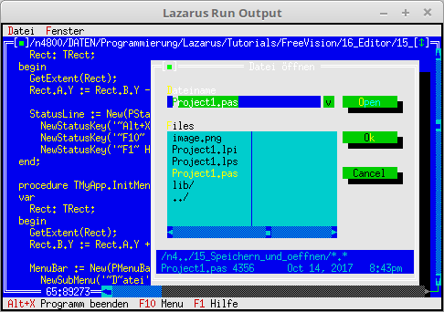

12 Editor
05 Speichern und oeffnen

Ein Editor wird erst brauchbar, wen Dateifunktionen dazu kommen, zB. öffnen und speichern.
Das Öffnen ist ähnlich von wie ein leerses Fenster erzeugen.
Einziger Unterschied, man gibt einen Dateinamen mit, welcher mit einem FileDialog ermittelt wird.
Für das einfache speichern, muss man nicht viel machen. Man muss nur das Event cmSave aufrufen, zB. über das Menü.
Hier ist noch OpenWindows und SaveAll dazu gekommen.
TMyApp = object(TApplication)
constructor Init;
procedure InitStatusLine; virtual;
procedure InitMenuBar; virtual;
procedure HandleEvent(var Event: TEvent); virtual;
procedure OutOfMemory; virtual;
procedure NewWindows(FileName: ShortString);
procedure OpenWindows;
procedure SaveAll;
procedure CloseAll;
end;
Der Speichern unter-Dialog ist schon fest verbaut, aber leider in Englisch.
Daher wird diese Funktion auf eine eigene Routine umgeleitet.
Auch habe ich die Maske *.* durch *.txt ersetzt.
Für die restlichen Diloage, werden die original Routinen verwendet, dies geschieht mit StdEditorDialog(....
Die Deklaration von MyApp ist schon hier oben, weil sie hier schon gebraucht wird.
Bei MyApp.Init werden noch die neuen Standard-Dialoge zugeordnet.
var
MyApp: TMyApp;
function MyStdEditorDialog(Dialog: Int16; Info: Pointer): Word;
begin
case Dialog of
edSaveAs: begin // Neuer Dialog in Deutsch.
Result := MyApp.ExecuteDialog(New(PFileDialog, Init('*.txt', 'Datei speichern unter', '~D~atei-Name', fdOkButton, 101)), Info);
end;
else
StdEditorDialog(Dialog, Info); // Original Dialoge aufrufen.
end;
end;
constructor TMyApp.Init;
begin
inherited Init;
EditorDialog := @MyStdEditorDialog; // Die neue Dialog-Routine.
DisableCommands([cmSave, cmSaveAs, cmCut, cmCopy, cmPaste, cmClear, cmUndo]);
NewWindows(''); // Leeres Fenster erzeugen.
end;
Im Menü sind die neuen Datei-Funktionen dazugekommen.
procedure TMyApp.InitMenuBar;
var
R: TRect;
begin
GetExtent(R);
R.B.Y := R.A.Y + 1;
MenuBar := New(PMenuBar, Init(R, NewMenu(
NewSubMenu('~D~atei', hcNoContext, NewMenu(
NewItem('~N~eu', 'F4', kbF4, cmNewWin, hcNoContext,
NewItem('~O~effnen...', 'F3', kbF3, cmOpen, hcNoContext,
NewItem('~S~peichern', 'F2', kbF2, cmSave, hcNoContext,
NewItem('Speichern ~u~nter...', '', kbNoKey, cmSaveAs, hcNoContext,
NewItem('~A~lle speichern', '', kbNoKey, cmSaveAll, hcNoContext,
NewLine(
NewItem('~B~eenden', 'Alt-X', kbAltX, cmQuit, hcNoContext, nil)))))))),
NewSubMenu('~F~enster', hcNoContext, NewMenu(
NewItem('~N~ebeneinander', '', kbNoKey, cmTile, hcNoContext,
NewItem(#154'ber~l~append', '', kbNoKey, cmCascade, hcNoContext,
NewItem('~A~lle schliessen', '', kbNoKey, cmCloseAll, hcNoContext,
NewItem('Anzeige ~e~rneuern', '', kbNoKey, cmRefresh, hcNoContext,
NewLine(
NewItem('Gr'#148'sse/~P~osition', 'Ctrl+F5', kbCtrlF5, cmResize, hcNoContext,
NewItem('Ver~g~'#148'ssern', 'F5', kbF5, cmZoom, hcNoContext,
NewItem('~N~'#132'chstes', 'F6', kbF6, cmNext, hcNoContext,
NewItem('~V~orheriges', 'Shift+F6', kbShiftF6, cmPrev, hcNoContext,
NewLine(
NewItem('~S~chliessen', 'Alt+F3', kbAltF3, cmClose, hcNoContext, Nil)))))))))))), nil)))));
end;
Einfügen eines Editorfensters.
Wen der Dateiname '' ist, wird einfach ein leeres Fenster erzeugt.
procedure TMyApp.NewWindows(FileName: ShortString);
var
Win: PEditWindow;
R: TRect;
const
WinCounter: integer = 0; // Zählt Fenster
begin
R.Assign(0, 0, 60, 20);
Inc(WinCounter);
Win := New(PEditWindow, Init(R, FileName, WinCounter));
if ValidView(Win) <> nil then begin
Desktop^.Insert(Win);
end else begin // Fügt das Fenster ein.
Dec(WinCounter);
end;
end;
Eine Datei öffnen und dies in ein Edit-Fenster laden.
Dabei wird ein FileDialog aufgerufen, in dem man eine Datei auswählen kann.
Um das laden der Datei in das Editor-Fenster muss man sich nicht kümmeren, dies geschieht automatisch.
procedure TMyApp.OpenWindows;
var
FileDialog: PFileDialog;
FileName: ShortString;
begin
FileName := '*.*';
New(FileDialog, Init(FileName, 'Datei '#148'ffnen', '~D~ateiname', fdOpenButton, 1));
if ExecuteDialog(FileDialog, @FileName) <> cmCancel then begin
NewWindows(FileName); // Neues Fenster mit der ausgewählten Datei.
end;
end;
Alle Dateien speichern, geschieht auf fast die gleiche Weise wie das alle schliessen.
procedure TMyApp.SaveAll;
procedure SendSave(P: PView);
begin
Message(P, evCommand, cmSave, nil); // Das Kommando speicherm mitgeben.
end;
begin
Desktop^.ForEach(@SendSave); // Auf alle Fenster anwenden.
end;
Die verschiednen Events abfangen und abarbeiten.
Um cmSave und cmSaveAs muss man sich nicht kümmern, das erledigt PEditWindow automatisch für einem.
procedure TMyApp.HandleEvent(var Event: TEvent);
begin
inherited HandleEvent(Event);
if Event.What = evCommand then begin
case Event.Command of
cmNewWin: begin
NewWindows(''); // Leeres Fenster erzeugen.
end;
cmOpen: begin
OpenWindows; // Datei öffnen.
end;
cmSaveAll: begin
SaveAll; // Alle speichern.
end;
cmCloseAll:begin
CloseAll; // Schliesst alle Fenster.
end;
cmRefresh: begin
ReDraw; // Anwendung neu zeichnen.
end;
else begin
Exit;
end;
end;
end;
end;